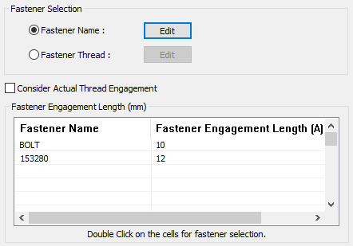
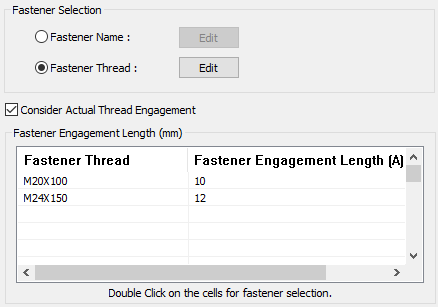
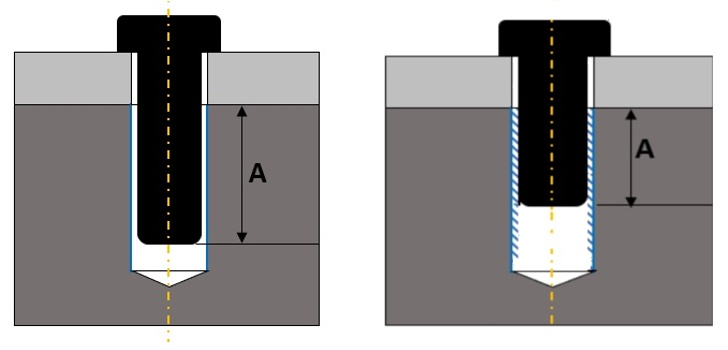

留め具かみ合い長さ（留め具と対応する穴の軸方向の重なり量）は、ユーザー指定値以上である必要があります。
ユーザーは、ルールに対して以下の入力を指定する必要があります。
Fastener - ルールを検証するための留め具名です。ドロップダウンリストから留め具を選択します。リストには Hardware Database のデータが読み込まれて表示されます。
Engagement length - 留め具の期待かみ合い長さを入力します。
留め具構成 では、次のオプションから選択します。


Fastener Thread のラジオボタンを選択して Edit ボタンを有効にします。続いて Edit ボタンをクリックし、次の画像に示すように、留め具ねじの Attribute 名と値を設定します。
Fastener Thread ダイアログボックスで、必要に応じて Attribute Name と Attribute Value を設定できます。
このルールでは、Attribute Name は完全一致（厳密な文字列一致）で比較されます。Attribute Value は、ユーザー指定値がコンポーネントの実際の属性値の部分文字列として含まれているかどうかで比較されます。
例えば、このルールは文字列型／パラメータ型として次のように扱います。

Fastener 列の 空白 をダブルクリックし、ドロップダウンメニューから必要な 留め具 を1つずつ選択します。
各留め具に対して標準のかみ合い長さ値（例：A>3*Pitch）を追加します。
完了したら、OK ボタンをクリックします。
Consider Actual Thread Engagement - このオプションは、実際のボルトねじと穴ねじを考慮して、実ねじのかみ合いをチェックします。

Normal Engagement Actual Thread Engagement
A = 留め具かみ合い長さ
ユーザーは、ルール構成で Ctrl+I コマンドを使用して、Excel シートテンプレートからハードウェアデータを一括インポートできます。データをインポートすると、DFMPro Hardware Database で使用できるようになります。
ハードウェアを構成するには、Hardware Database を参照してください。
標準テンプレート形式:
F |
A |
N |
Fastener_1 |
1.0 |
ITEM_1 |
Fastener_2 |
2.0 |
ITEM_2 |
Fastener_3 |
3.0 |
ITEM_3 |
N |
V |
ITEM_1 |
M20X160 |
ITEM_2 |
M24X150 |
ITEM_3 |
M20X100 |
Fastener Thread 用の標準テンプレート形式
F = 留め具名
A = 留め具かみ合い長さ
N = Attribute Name
V = Attribute Value
注記:
Excel には、Fastener の名前にパート拡張子が含まれます。（例：Fastener_1.prt）
Fastener 名にはスペースを含めないでください。（例：Fastener 1）
Hardware Database ダイアログボックスで必須のフィールドは Hardware Name です。
Fastener Thread オプションを使用するには、DFMPro for Creo Parametric 8.0 バージョンからデータベースを更新してください。
このルールは、DFMPro Settings に基づき、トップレベルのアセンブリ部品で実行できます。
ユーザーはワイルドカード文字を使用してコンポーネント名を設定できます。